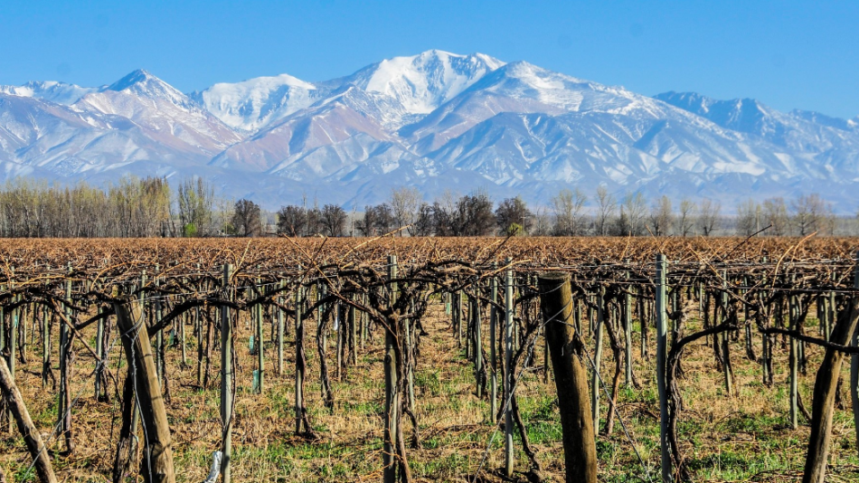
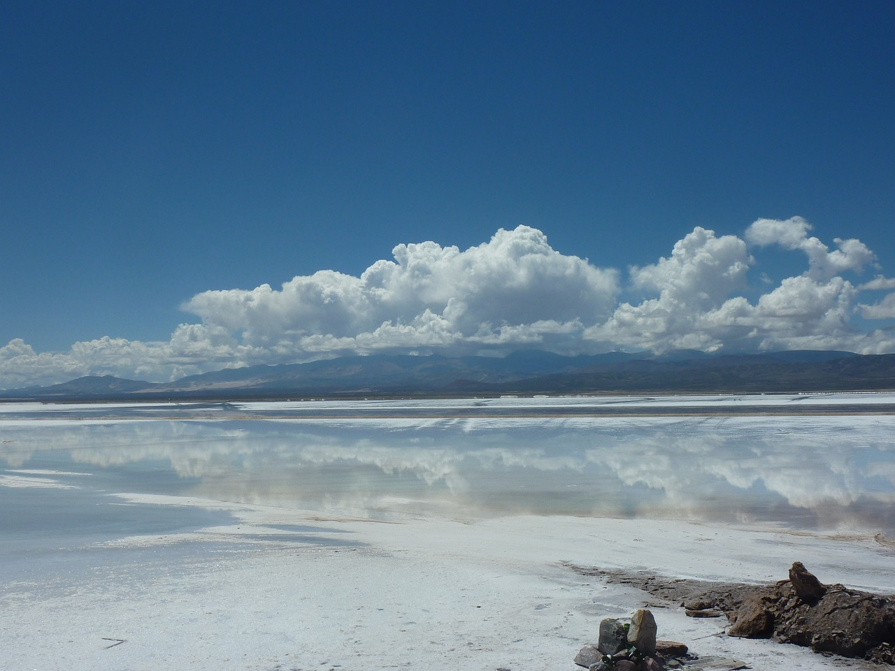

DESTINOS PREFERIDOS
-

Patagonia Argentina
La Patagonia argentina, una vasta meseta entre los Andes y el Atlántico, es tierra de extremos. Con su clima continental, alberga estepas, fauna diversa y recursos como petróleo. Es un lugar de contrastes, donde la naturaleza impone su majestuosidad y desafía con su inmensidad
-

Buenos Aires
Buenos Aires, capital de Argentina, es una ciudad vibrante y diversa. Conocida por su arquitectura europea, tango apasionado y rica historia cultural. Es un crisol de arte, gastronomía y vida nocturna, atrayendo a visitantes de todo el mundo con su encanto único
Mendoza
Brasil, el gigante de Sudamérica, es un país de contrastes y colores. Conocido por su carnaval, fútbol y música vibrante, es un mosaico de culturas. A pesar de su belleza natural y diversidad cultural, enfrenta desafíos como la desigualdad y la deforestación de la Amazonía

Glaciar Perito Moreno
El Glaciar Perito Moreno, ubicado en el Parque Nacional Los Glaciares, es un espectáculo natural de la Patagonia argentina. Con un frente de 5 km y alturas de hasta 60 metros, es uno de los pocos glaciares en equilibrio, avanzando mientras mantiene su masa.

Villa Carlos Paz
Villa Carlos Paz, en Córdoba, Argentina, es un destino turístico destacado. Con su famoso reloj Cucú y la aerosilla, ofrece vistas panorámicas y entretenimiento. Su cercanía a Córdoba y otros puntos turísticos, junto con su clima serrano y paisajes, la convierten en una elección popular para vacaciones familiares y aventuras al aire libre

Cataratas del Iguazú
Las Cataratas del Iguazú, maravilla natural en la frontera argentino-brasileña, son un espectáculo de 275 saltos. El Parque Nacional Iguazú las alberga, destacando la Garganta del Diablo. Este paraíso de biodiversidad y sonidos de agua cae desde 80 metros, ofreciendo una experiencia única y vibrante en medio de la selva tropica
Salinas Grandes Jujuy
Las Salinas Grandes de Jujuy son un deslumbrante desierto de sal en la Puna argentina. Con 212 km², este salar se extiende entre Jujuy y Salta, ofreciendo un paisaje surrealista. La corteza de sal, producto de la evaporación de aguas volcánicas, crea un escenario único que cambia con el clima, mostrando desde un blanco inmaculado hasta un espejo de agua